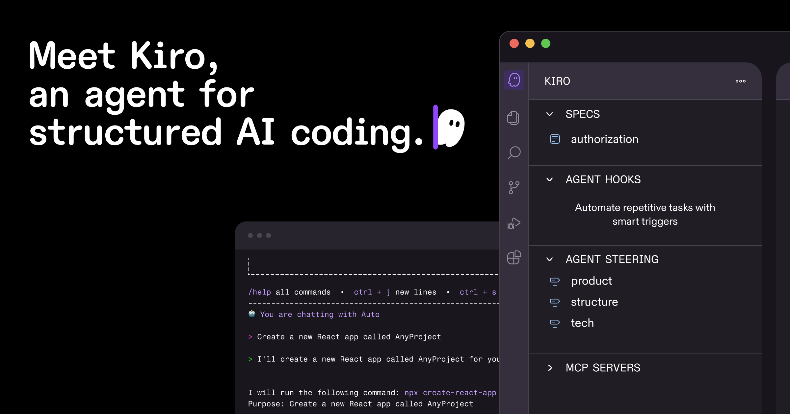

BA / FA / PO Reference · 2026
Functional Specs
Toolkit
Purpose-built tools beat generic LLMs for consistent spec output. Structure acceptance criteria with EARS "shall" statements when specs feed AI coding agents. AI drafts — humans approve, always.

Tool Matrix
7 tools · choose by integration, AI-agent fit, and draft speed
Azure DevOps-native FRDs, user stories, and test cases. Elicit feature generates child stories from parent work items. [18]
⚡ MinutesAzure DevOps only
Regulated industries; INCOSE/EARS inline scoring. Advisor checks requirements against EARS rules as you type. [6]
⚡ MinutesEnterprise pricing
Portable, MIT-licensed, agent-agnostic spec-driven dev framework. Works with any AI coding agent. [10]
⚡ MinutesHigh review burden; many files
EARS Quick Reference
Rolls-Royce → adopted by Airbus, Bosch, NASA, Siemens [12] · use when specs feed AI coding agents
Core pattern: While <precondition>, when <trigger>, the <system> shall <response>. — Mix clauses as needed.
Spec-Driven Development Pipeline
Specs become agent-executable contracts, not handoff artifacts [10]
Prompt Templates
Role + Context + Task + Constraints + Output format [16] · works with Claude, ChatGPT, Copilot
Platform-Native Integrations
Avoid context-switching — use what's already in your ecosystem
Critical Rules
- Stakeholder politics or unstated constraints
- Legal, compliance, or safety weight of a requirement
- Tradeoff calls when requirements conflict
- Validating generated language matches real intent
Human layer: plain language, rationale, stakeholder narrative.
Agent layer: structured headings, "shall" clauses, explicit out-of-scope list, non-functionals.
Pattern: write human-first, then add a machine layer —
.cursorrules, CLAUDE.md, or EARS-structured ACs.